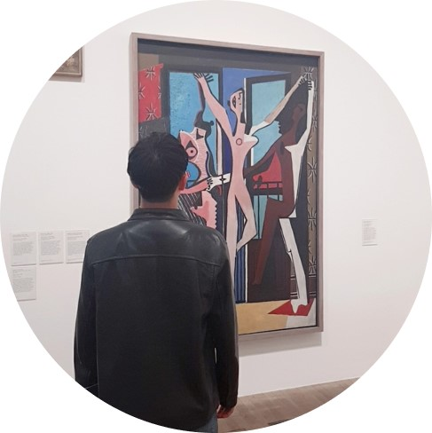

Hyunsung Eun

Career
- B.S in Dpt. of Electrical Engineering, Korea Advanced Institute of Science and Technology (KAIST) (2017.08)
- M.S in Laboratory of Imaging Science and Technoloy, Dpt of Electrical and Computer Engineering, Seoul National University (2020.02)
- Machine Learning Researcher, TMAX AI (2020.01~Now)
Research
- Developed a novel method to separate the effects of magnetic susceptibility and chemical shift or exchange in magnetic resonance imaging (MRI)-based frequency shift
- Developed automatic cerebrospinal fluid (CSF) zero-referencing method for improving contrast to noise ratio (CNR) of susceptibility map-weighted imaging (SMWI)
- Improved a reconstruction of quantitative susceptibility mapping (QSM) via physics model-based multi-block deep neural network
Publications
Certificate & Award
- IDEA sequence programming certificate, Siemens Healthineers (2019.03)
- Best Poster Presentation Award, International Congress of Magnetic Resonance Imaging (ICMRI) 2019
Experience
- Organinzing Committee of ICISTS-KAIST 2015, Finance Division
- Research Assistant at I-ON communications (2016.12-2017.02)
- TAship for undergraduate and graduate engineering courses in Dpt. of Electrical and Computer Engineering
- Bio-imaging (M2608.000600, Spring 2019)
- Bio-instrumentation (430.425, Spring 2018)